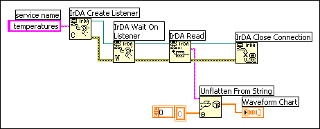
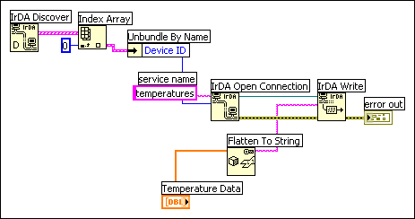

With IrDA technology, devices can communicate through a wireless infrared interface. In LabVIEW two VIs running on two separate computers can communicate using built-in IrDA capabilities. For example, you can build a VI that runs a test and collects the results on one desktop computer. You can then transmit that data via infrared beams to another computer.
Bluetooth technology provides flexible, low-power communication among Bluetooth devices over a radio frequency. In LabVIEW, VIs running on separate computers or on Mobile devices can use Bluetooth capabilities to communicate.
An IrDA network is similar to an isolated TCP/IP network, where you can assign IP addresses at random as long as each address on the network is unique. Because an IrDA network is dynamic and devices can enter and leave the network frequently, there are no fixed IrDA addresses that a client can look up to establish communication with a server. When the network detects a computer, the network identifies each device by its name (usually specified by the user) and a dynamically generated unique 32-bit ID.
To establish communication between devices on a wireless network, the IrDA device acting as a server monitors the network for devices attempting to establish communication on the network. The server creates a listener, so it can listen for any device that enters the network, as opposed to opening a connection by specifying an address to determine if that device is connected to the network. The listener establishes a service, which is similar to opening a port in TCP, by accessing a free entry in a database on the server called the information access service (IAS) database. The database can include up to 128 entries. Each established service in the IAS database is assigned a Logical Service Access Point Selector (LSAP-SEL), a number ranging from 0 to 127, and a corresponding service ID, which is a string that identifies the service.
The client queries the database with the service ID to find the LSAP-SEL number. After the LSAP-SEL number is established, communication between the devices can begin.
For example, you could identify a service with the service ID temperature so when the server establishes a connection with a client, it sends a collection of temperatures to the client. The server then listens for a client requesting the service ID temperature. When the client connects to the network, it sends the service temperature to the server, which in turn establishes an LSAP-SEL number for the service. The client then queries the server for the for the LSAP-SEL number corresponding to the temperature service. After the LSAP-SEL number is established, the server sends the temperature data to the client.
Refer to the Infrared Data Association Web site for more information about IrDA technology.
After you install on your computer an infrared device that conforms to the IrDA standards and ensure that it is working properly, you can start building IrDA applications.
To establish a wireless communication link between VIs running on separate computers, create an IrDA server using the IrDA functions. The server establishes the line of communication between itself and the remote computer. The server listens for and discovers transmissions from the remote computer. The server transmits data to and receives data from the remote computer and closes the connection.
The VI in the following illustration creates a service called temperatures, listens for a remote computer requesting that service, reads the temperature data the device collects, unflattens the string to an array of numbers, plots that data to a chart, and closes the connection.

The VI in the following illustration discovers the device ID of the remote server, establishes a connection to the service temperatures, flattens an array of numbers to a string, and writes temperature data to the server.

Bluetooth is a wireless technology that uses a radio frequency of 2.4 GHz to allow devices to communicate. The range of a Bluetooth connection is between 30 and 40 feet, depending on the device and environmental conditions.
The LabVIEW Bluetooth VIs and functions use RFCOMM, which is a connection protocol the Winsock interface exposes. RFCOMM is simple transfer protocol that emulates serial communication. The RFCOMM interface defines Bluetooth servers and clients.
Creating Bluetooth server and client applications in LabVIEW is similar to creating server and client applications for TCP communication. A Bluetooth server uses the Service Discovery Protocol (SDP) to broadcast the availability of the services the server contains and listens for inbound connections. A client creates an outbound RFCOMM connection to a server. Once the client and server connect to each other, they exchange data until the client or server terminates the connection or until the connection is lost.
LabVIEW supports Bluetooth devices that use the Microsoft Bluetooth driver. Refer to the Microsoft website for Bluetooth devices that support the Microsoft Bluetooth driver. Most Bluetooth devices use a proprietary Bluetooth driver by default. To use the device with LabVIEW, you must switch to the Microsoft Bluetooth driver.
Refer to the Bluetooth and Microsoft websites for more information about Bluetooth technology.